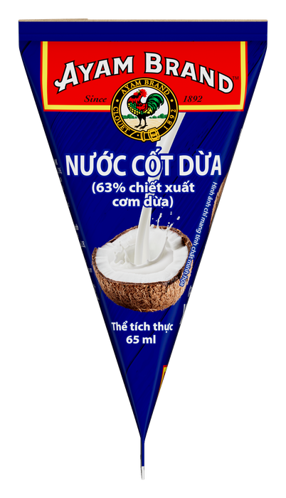
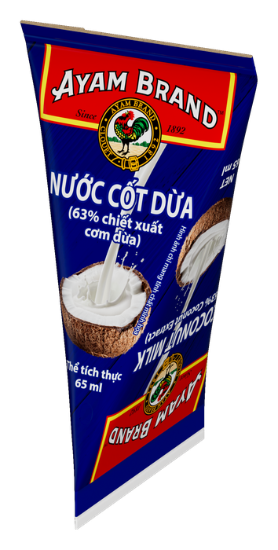
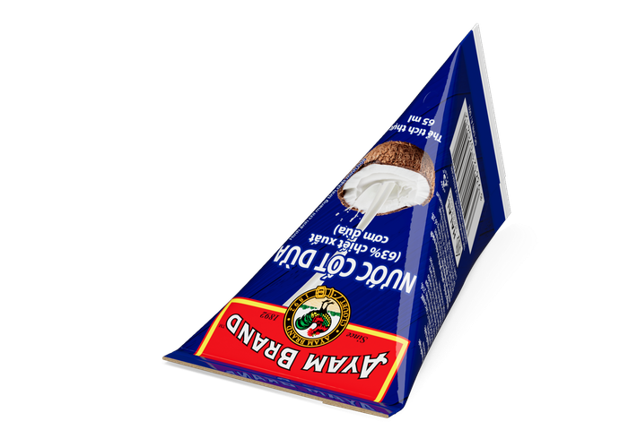
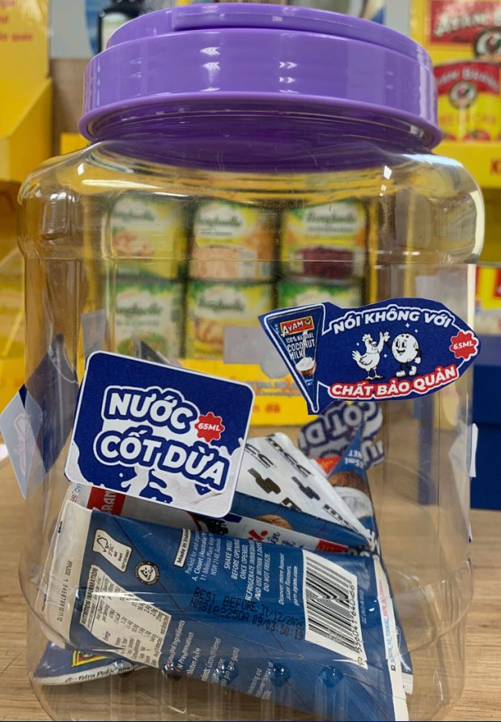
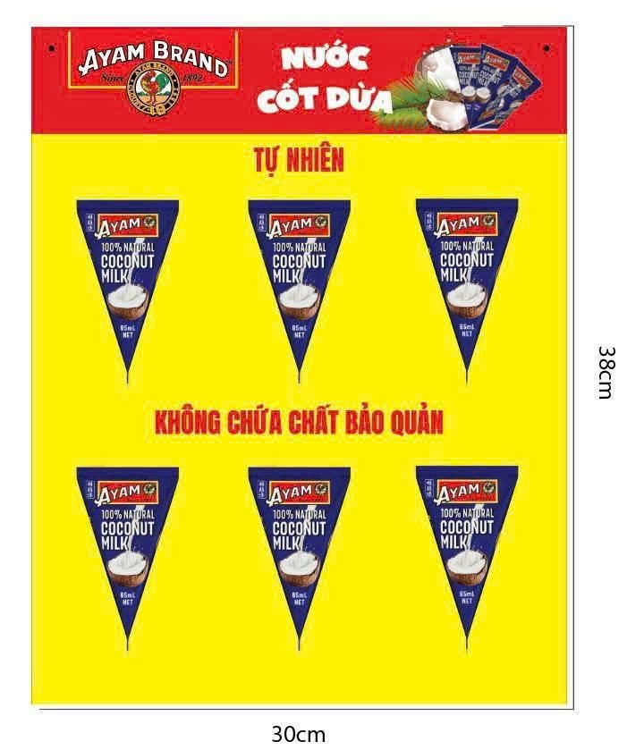
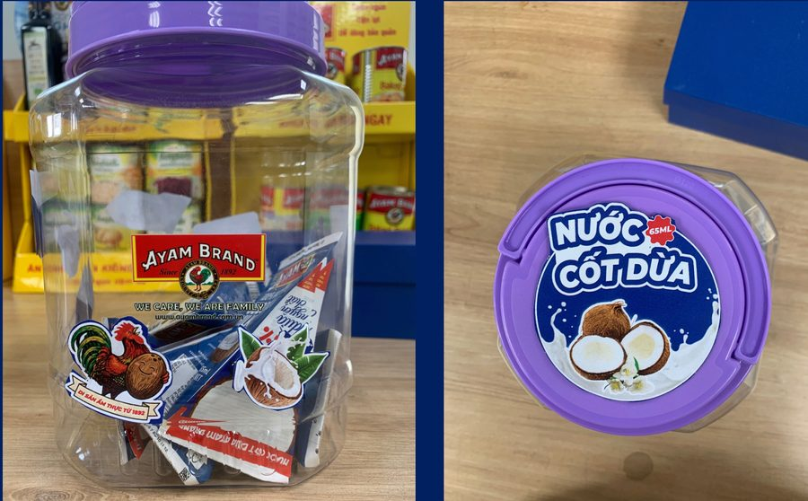
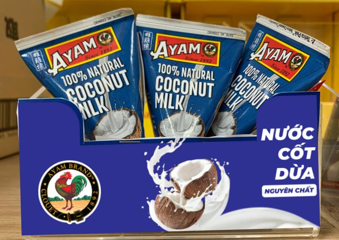

🏢 Tổng quan Ayam Brand™ – Since 1892
Ayam Brand™ được sáng lập năm 1892 tại Singapore bởi Alfred Clouet — một trong những thương hiệu thực phẩm đóng hộp lâu đời nhất châu Á. Thuộc Maison Denis – tập đoàn gia đình Pháp thành lập từ 1862, thành viên UN Global Compact. Tại Việt Nam, phân phối độc quyền bởi Công ty TNHH Denis G.M.
📊 Phủ hàng theo kênh – Storelist 2025
* Top tỉnh: HCM (801), Đà Nẵng (430), Huế (215), Hà Nội (148+)
🏭 Chứng nhận Nhà máy
Cấp bởi Bureau Veritas Certification VN · Phạm vi: Đóng hộp & tiệt trùng retort
🌿 ESG & Bền vững
- 🎯 Trung hoà carbon vào năm 2040
- 🌴 100% RSPO-certified sustainable palm oil
- 🐬 Thành viên sáng lập SASPO cùng WWF-Singapore
- 🎣 100% cá ngừ Dolphin Safe – chống đánh bắt IUU
- ♻️ Mục tiêu bao bì tái chế 100% vào 2030
🥫 Nhà máy sản xuất theo nhóm sản phẩm
🇻🇳 Vietnam Factory – Beans & Vegetables
Đậu, cà chua, đậu Hà Lan, đậu gà, đậu đỏ. Nguyên liệu đậu nhập từ Mỹ (Great Northern Beans). Nhà máy 35,000m², đạt FSSC 22000 / HACCP / GMP.
🇲🇾 Malaysia Factories (2) – Fish & Coconut
Cá trích, cá thu, nước cốt dừa, sốt. Cá đánh bắt vùng biển lạnh → thịt chắc, Omega-3 dồi dào. Dừa Non-GMO. Quản lý trực tiếp bởi Denis Group.
🇹🇭 Thailand Factory (1) – Tuna & Sriracha
Cá ngừ Skipjack đánh bắt tự nhiên — 100% Dolphin Safe. Bắp ngọt chọn lọc. Sriracha từ ớt và tỏi thật.
🇮🇩 Indonesia – Coconut Mini Pack
Nước cốt dừa 65ml Tetra Pak — sản phẩm chiến lược H2 2026. Dừa nguồn gốc Indonesia.
🔬 Công nghệ Retort – Tại sao Ayam Brand khác biệt
Retort là công nghệ tiệt trùng nhiệt áp suất cao — tiêu chuẩn vàng của ngành thực phẩm đóng hộp quốc tế. Đây là lý do không cần chất bảo quản hóa học mà vẫn có HSD 3 năm.
⚔️ Retort vs Chất Bảo Quản Hóa Học – So sánh trực tiếp
⚔️ Retort vs Chemical Preservatives – Direct Comparison
🏆 Ayam Brand – Retort
- Tiệt trùng vật lý – không hoá chất
- HSD 3 năm hoàn toàn tự nhiên
- Không E211, E202, BHA, BHT
- BPA-Free (đang hoàn thiện)
- Khi mở lon = lần đầu không khí vào
⚠️ Nhãn nội địa VN phổ biến
- E211 (Sodium Benzoate) – ức chế vi khuẩn hóa học
- E202 (Potassium Sorbate) – chống nấm mốc
- HSD thường ngắn hơn hoặc tương đương
- Khách hàng ngày càng né tránh E-number
🥫 Công nghệ BPA-Free Can
BPA (Bisphenol A) là hoá chất trong lớp phủ bên trong lon truyền thống — có thể di chuyển vào thực phẩm, gây lo ngại sức khoẻ. Ayam Brand đã chuyển đổi sang BPA-Free lining từ 2012.
Ayam Brand
BPA-Free Can
- Lớp phủ không BPA/BPF/BPS
- Ngăn oxy & vi khuẩn
- An toàn hơn cho sức khoẻ
- HSD dài hơn
Lon Truyền Thống
(có BPA)
Traditional Can
(with BPA)
- Lớp epoxy chứa BPA
- BPA có thể migrate vào thực phẩm
- Tiêu chuẩn cũ
Tetra Pak 65ml
(Coconut Mini)
- Không kim loại – hoàn toàn BPA-Free
- Thiết kế tam giác độc quyền
- Tái chế được
📖 3 Cơ chế bảo quản tự nhiên
Gia nhiệt 115–135°C áp suất cao trong autoclave → tiêu diệt 100% vi sinh vật & bào tử chịu nhiệt (kể cả Clostridium botulinum)
Nước muối trong lon đậu/peas ức chế vi khuẩn bằng cơ chế thẩm thấu tự nhiên — không cần thêm hoá chất bảo quản
Lớp phủ bên trong lon ngăn oxy & vi khuẩn xâm nhập sau khi tiệt trùng → kéo dài HSD, an toàn hơn cho sức khoẻ
🏭 Quy trình sản xuất đầy đủ – Từ nguyên liệu đến thành phẩm
Nguồn: Denis G.M. – Sales & Marketing Training Session II | Quy trình áp dụng cho nhóm Đậu (Beans & Vegetables)
Đậu khô nhập khẩu: Receive → Check quality → Storage. Ngâm và cấp ẩm lại (Rehydrating) — giúp hạt mềm, chín đều, không bị nát, giảm vị đắng, dễ hấp thu sốt cà hơn. Đậu đi qua máy bẫy nam châm (Magnet Trap) để loại kim loại nặng.
Detoning & Sorting — loại bỏ hạt hỏng, kích thước không đạt. Washing & Cleaning — rửa sạch nhiều lần bằng nước sạch tiêu chuẩn. Magnet & Sieving — kiểm tra lần 2 để đảm bảo không có tạp chất.
Cook Sauce — sốt cà chua được nấu theo công thức chuẩn. Empty Can kiểm tra chất lượng lon (Quality Check). Filling — đổ sốt vào lon theo tỷ lệ chính xác. Seaming — hàn kín hermetic.
Retorting — 115–135°C áp suất cao, 30–90 phút tùy sản phẩm. 4 phương pháp: Steam / Water Immersion / Water Spray / Overpressure. Tiêu diệt 100% vi sinh vật kể cả Clostridium botulinum. Cooling — làm lạnh nhanh, giữ kết cấu, cân bằng áp suất lon.
X-Ray Machine — kiểm tra dị vật bên trong lon (xương, kim loại, tạp chất). Quality check — kiểm tra ngoại quan, hàn kín, nhãn. Packing & Storage — đóng thùng, lưu kho điều kiện chuẩn. Sau đó mới xuất kho theo lệnh sản xuất.
💪 Điểm mạnh & Win Arguments theo nhóm sản phẩm
Mỗi nhóm sản phẩm có 5 luận điểm bán hàng cốt lõi — ghi nhớ và dùng trực tiếp khi gặp khách. Kéo xuống để xem infographic dinh dưỡng từng nhóm.

425g

230g

425g

Beans 425g

Puree 430g
📊 Dinh dưỡng Đậu Ayam Brand (per 100g)

in Water 150g

Sunflower Oil 150g

Tomato 230g

EVOO 120g

Tomato 155g
🐟 Omega-3 & Dinh dưỡng nhóm Cá Ayam Brand (per 100g)

65ml Tetra Pak

400ml

Cream 400ml

Corn 425g
🥥 Nước Cốt Dừa Ayam Brand 65ml
📦 Thông tin sản phẩm
| Thành phần | Chiết xuất dừa (63%), nước, guar gum | |
| Xuất xứ | 🇮🇩 Indonesia | |
| Bao bì | Tetra Pak tam giác – thiết kế độc quyền | |
| Quy cách | 46 packs / carton | |
| Hạn sử dụng | 18 tháng – bảo quản thường | |
| Chứng nhận | ☪️ Halal JAKIM + MUI · FSSC 22000 · Non-GMO | |
💰 Cơ cấu giá phân phối
🏷️ Diện mạo mới – Nhãn 100% Tiếng Việt
Nhãn mới in trực tiếp "NƯỚC CỐT DỪA (63% chiết xuất cơm dừa)" ngay mặt trước — người tiêu dùng GT & tỉnh đọc hiểu ngay lập tức, xóa hoàn toàn rào cản "hàng ngoại khó đọc".

Mặt trước 65ml

Tetra Pak độc quyền

Không cần dựng đứng
🚀 3 Vũ khí mở rộng độ phủ – Sales dùng ngay khi chào hàng
- ✅ Hũ nắp tím + sticker "Nước Cốt Dừa 65ml" & "Nói không với chất bảo quản"
- ✅ Đặt ngay quầy thu ngân — vị trí mua ngẫu hứng tốt nhất
- ✅ Chiếm 0 cm² kệ — xóa lý do từ chối "hết chỗ trưng bày"
- ✅ Hũ trong suốt — khách thấy sản phẩm thật, tự cầm lên xem
- ✅ Khung treo 30×38cm in sẵn thông điệp "Tự nhiên · Không chứa chất bảo quản", treo 12 hoặc 18 bịch — format quen như dầu gội gói
- ✅ Tận dụng không gian treo trên cao/cạnh cửa — nơi chưa ai khai thác cho cốt dừa
- ✅ Luôn ở tầm mắt khách bước vào — nhắc nhớ mỗi lần đi chợ
- ✅ 1 dây bán hết = 1 lần đặt lại — vòng quay nhanh, dễ theo dõi
- ✅ Điểm bán mở mới + nhập nước cốt dừa → nhận ngay quà tặng khai trương hàng
- ✅ Sales mở lời dễ: "Em có quà cho anh/chị" — icebreaker tự nhiên, không bị đuổi khéo
- ✅ Cộng dồn với KM mua 8 thùng tặng 1 — offer khó từ chối
- ✅ Mục tiêu: tăng tốc độ phủ 65ml nhanh nhất danh mục

Sticker "Nói không với chất bảo quản"

"Tự nhiên · Không chứa chất bảo quản"

"Di sản ẩm thực từ 1892"

"Nước Cốt Dừa Nguyên Chất"
🍳 Ứng dụng thực tế
- 🍲 Cà ri 2 người – đúng lượng
- 🍜 Canh / soup
- 🍮 Chè dừa, bánh
- 🥤 Coconut smoothie
- ☕ Coconut Coffee / Latte
- 🧋 Coconut milk tea
- 🍦 Kem dừa, parfait
- 🥐 Bánh ngọt, tráng miệng
- 🍴 Quán cơm – 1 gói = 1 phần cà ri
- 🚚 Food truck
- 🏨 Khách sạn mini
- 📦 Căng tin, bếp nhỏ
⚔️ Bản đồ Đối thủ cạnh tranh theo nhóm sản phẩm
Mỗi nhóm sản phẩm gồm: thang định vị giá (thấp → cao, Ayam được highlight đỏ), và thẻ đối thủ với tên thương hiệu cỡ lớn — kèm định vị, điểm mạnh & kênh phân phối, điểm yếu, hoạt động trade marketing và cách Ayam Brand đấu lại.
🚫 Nguyên tắc vàng: KHÔNG nói xấu đối thủ trước mặt khách — chỉ dùng dữ liệu để so sánh khách quan (thành phần, %, chứng nhận, giá/gram).
💬 Xử lý phản đối từ điểm bán GT
Kỹ thuật cốt lõi: Xác nhận → Giải thích → Đề xuất. Đừng tranh luận — hãy đặt câu hỏi ngược để dẫn dắt.
Giải thích: "Nhưng Ayam Brand đang có mặt tại 1,694 điểm bán toàn quốc — khách đã quen tìm mua. Nguyên liệu nhập từ Mỹ, đóng lon nhà máy FSSC 22000 — không phải giá cao vô lý."
Đề xuất: "Thử nhập 1 thùng Đậu Sốt Cà 230g — entry-level để khách quen trước. Em hỗ trợ trưng bày."
Giải thích: "Ayam Brand là nhãn quốc tế 130 năm, không BQ, BPA-Free — phân khúc khách hàng khác: gia đình quan tâm sức khoẻ, khách nước ngoài, người mua theo thương hiệu."
Đề xuất: "Trưng thêm 1 facing nhỏ — test 30 ngày. Không bán được, em đổi hàng."
Đề xuất: "Vấn đề thường là vị trí shelf — hàng lẫn với nhãn khác khách không thấy. Em sẽ hỗ trợ trưng bày mắt nhìn."
Bằng chứng: "HSD 3 năm trên lon là minh chứng rõ nhất — công nghệ retort đã tồn tại 200 năm."
Gợi ý: "Nếu có thể cải thiện 1 điều về hàng đang bán thì đó là gì? Chúng ta cùng xem Ayam có giải quyết không."
📚 Kiến thức chuyên sâu – FAQ
📦 Danh mục SKU – Ayam Brand tại Việt Nam
| # | Tên sản phẩm | Nhóm | Quy cách | Xuất xứ | HSD | Halal |
|---|
🏷️ Thành phần & Thông tin Claim
Tra cứu nhanh thành phần, phân tích phụ gia và các điểm claim bán hàng của từng sản phẩm — giúp Sales trả lời tự tin khi khách hỏi "có chất bảo quản không?", "có màu nhân tạo không?"…
📚 Căn cứ pháp lý: TT 24/2019/TT-BYT · NĐ 43/2017/NĐ-CP · TT 29/2023/TT-BYT · Codex GSFA
🎯 7 Bước Bán Hàng Hiệu Quả
Một nhân viên kinh doanh chuyên nghiệp luôn tuân thủ quy trình bán hàng bài bản. Ghi nhớ 7 bước này và áp dụng mỗi lần ghé thăm điểm bán.
• Chốt lựa chọn: "Anh/chị muốn chọn 230g hay 425g?"
• Chốt lợi ích: "Đặt hôm nay tặng ngay 1 thùng khi mua 8"
• Chốt khan hiếm: "Chương trình này chỉ còn đến cuối tháng"
🤝 Kỹ năng Đàm phán
🔑 Nguyên tắc cốt lõi
🔑 Core Principles
Không ép khách hàng — tạo ra giá trị đôi bên cùng có lợi. Khách có margin tốt, mình có đơn hàng dài hạn.
Nghiên cứu khách hàng, giá trị sản phẩm, đối thủ trước khi đàm phán. Người chuẩn bị tốt hơn luôn thắng.
Không tỏ ra vội vàng. Sẵn sàng nhượng bộ trong giới hạn cho phép — nhưng luôn đổi lấy điều gì đó.
Sau khi đưa ra offer → dừng lại. Sự im lặng tạo áp lực tự nhiên. Ai nói trước thường nhượng bộ trước.
⚡ Chiến lược đàm phán quan trọng
⚡ Key Negotiation Strategies
Khi khách nói "Sản phẩm đắt hơn đối thủ" → trả lời: "Đúng. Nhưng nếu so về giá trị thương hiệu 130 năm, chất lượng không MSG, chuỗi siêu thị đang trưng bày — thì giá đó rất xứng đáng. Khách của anh/chị đang trả tiền cho thương hiệu, không phải chỉ cho lon đậu."
"Chương trình mua 8 tặng 1 chỉ còn đến [ngày]" / "Khu vực này em đang chào 3 điểm, ai lấy trước sẽ được hỗ trợ trưng bày ưu tiên"
"Sản phẩm này đang bán tại Mega Market, Lotte Mart, GO!, Co.opmart toàn quốc. Hàng xóm điểm bán của anh/chị (tên cụ thể) đang bán được và đặt lại hàng tuần."
Thay vì giảm giá → đổi bằng: thời gian giao hàng nhanh hơn / chương trình sampling / hỗ trợ trưng bày / tặng kệ nhỏ. Mỗi nhượng bộ đều phải đổi lấy điều gì đó từ khách.
🚫 Vượt qua Từ chối & So sánh với Đối thủ
Nguyên tắc vàng: Không bao giờ nói xấu đối thủ — nhấn mạnh điểm mạnh của Ayam Brand thay vì điểm yếu của đối thủ.
| Loại từ chối / So sánh | Cách xử lý hiệu quả |
|---|---|
| 💰 Giá cao | • Nhấn mạnh giá trị thương hiệu 130 năm, chất lượng quốc tế • Tính giá trên gram thịt thực tế: Ayam 73% cá vs đối thủ 53% — ai rẻ hơn thật sự? • Chuỗi cung ứng ổn định, không bị đứt hàng, không bị phá giá • "Khách của mình đang trả cho thương hiệu — họ không phàn nàn về giá tại Mega Market" |
| 🤔 Muốn suy nghĩ thêm | • Hỏi khéo léo: "Anh/chị còn băn khoăn điều gì cụ thể?" • Giới thiệu thêm chương trình ưu đãi, hỗ trợ đi kèm • Đặt thử số lượng nhỏ: "Anh/chị thử 2–3 thùng xem phản hồi của khách — em đảm bảo đổi nếu không bán được" |
| 🏪 Đã có sản phẩm đối thủ | • Không nói xấu đối thủ — NGUYÊN TẮC • Nhấn mạnh USP Ayam: không MSG, HSD dài, Halal JAKIM+MUI, phân phối rộng • Hỏi: "Khách của anh/chị quan tâm đến giá, chất lượng, hay promotion nhiều hơn?" • Đề xuất thêm Ayam bên cạnh (không thay thế): đa dạng hóa kệ, thêm lựa chọn cho NTD, thêm khách trung thành Ayam |
| 📦 Sợ hàng tồn kho | • HSD 3 năm — rủi ro tồn kho gần bằng 0 • DGM hỗ trợ xoay date — cam kết bằng lời • Số lượng thử nhỏ: "Chỉ 1 thùng — nếu 30 ngày không bán được, em đổi cho" • Date dài là lợi thế tài chính của điểm bán: không cần bán gấp, không bị phá giá |
| 🆕 Hàng mới, khách chưa biết | • "Đây là sản phẩm dành cho xu hướng tiêu dùng an toàn — đang bùng nổ" • Social proof: "Đang bán tốt tại Mega Market, Lotte — khách GT cũng đang tìm mua về" • DGM hỗ trợ sampling, hoạt náo, trưng bày để giúp ra hàng • "Thêm hàng trên kệ là thêm lựa chọn cho khách — tăng cơ hội bán hàng" |
| 💳 Xin công nợ | • Linh động theo chính sách NPP • Cho điểm mới: chào số lượng nhỏ (vài lon/mã) → chi phí ban đầu thấp, không cần công nợ nhiều • Cam kết tần suất thăm, hỗ trợ giải tồn nếu bán chậm |
🎭 3 Tình huống thực tế hay gặp
🎭 3 Common Real-World Scenarios
- Giới thiệu nhanh, rõ: Ai, công ty nào, sản phẩm gì, đang bán ở đâu, nấu món gì
- Đưa ra giá mua + giá bán đề xuất → lợi nhuận rõ ràng/lon
- Đặt câu hỏi tìm hiểu quan tâm: giá? tồn kho? thương hiệu? khách hay hỏi loại nào?
- Chọn thời điểm phù hợp — tránh giờ cao điểm
- Quan sát kệ hàng trước khi vào để biết tiềm năng điểm bán
- Kiểm tra kệ trước: hàng tồn bao nhiêu? date còn bao lâu?
- Thêm sp mới = đa dạng hóa kệ, thêm lựa chọn cho khách → không cạnh tranh với hàng cũ
- Offer phải đủ hấp dẫn để khó từ chối — mục tiêu lấy tiền ngay
- Last resort: swap hàng tồn sang SKU bán nhanh hơn + thêm mặt hàng mới
- Lắng nghe đầy đủ — không cắt ngang, không bào chữa ngay
- Xác nhận: "Dạ em rất tiếc khi anh/chị gặp phải tình huống này"
- Thu thập thông tin: Mã lô (số lot), ngày sản xuất, ảnh chụp nếu có
- Không tự ý hứa đổi trả mà chưa báo cáo → báo ngay cho DGM để xử lý theo quy trình
- Lon phồng / gỉ nặng / mùi lạ → thu hồi ngay, không để tiếp tục bán
🍳 Cookbook – Gợi ý món ăn với sản phẩm Ayam Brand
Tất cả công thức phù hợp bếp gia đình Việt. Dùng để tư vấn khách hàng cách sử dụng sản phẩm. Nguồn: Ayam Brand 130-Year E-Recipe Book + DGM Vietnam adaptation.
🐟 Cá Thu Sốt Cà Chua Kho Tiêu
🐟 Braised Mackerel in Tomato Black Pepper Sauce
Nguyên liệu
Ingredients
- 1 lon Cá Thu Sốt Cà Ayam 230g
- 2–3 muỗng sốt tiêu đen (hoặc tiêu xay + tương cà)
- 1/2 củ hành tím, 2 tép tỏi
- Nước mắm, đường, hành lá
Cách làm
Method
- Phi thơm tỏi hành tím
- Cho cá vào, đảo nhẹ tay
- Thêm tiêu đen, nước mắm, chút đường
- Rim nhỏ lửa 8–10 phút
- Rắc hành lá, dùng nóng với cơm
🐟 Cơm Chiên Cá Trích Kiểu Danish (từ Ebook)
🐟 Danish's Sardine Fried Rice (from Ebook)
Nguyên liệu
Ingredients
- 1 lon Cá Trích EVOO Ayam 120g
- 2 chén cơm nguội
- 2 quả trứng
- Hành lá, ớt, nước mắm, dầu ăn
- Tương ớt Sriracha Ayam (tùy chọn)
Cách làm
Method
- Đập trứng vào chảo nóng dầu, scramble sơ
- Thêm cơm, xào lửa lớn 3–4 phút
- Mở lon cá trích, cho vào cùng dầu olive trong lon
- Nêm nước mắm, ớt, hành lá. Dùng nóng
🐟 Cá Ngừ Sốt Cà Chua Cay Kiểu Shakshuka
🐟 Spicy Tuna Shakshuka
Nguyên liệu
Ingredients
- 1 lon Chilli Tuna Ayam 160g
- 1/2 lon Puree Cà Chua Ayam 220g
- 2–3 quả trứng
- 1/2 củ hành tây, 1 trái ớt chuông đỏ
- Tỏi, muối, tiêu, cumin (tùy chọn)
Cách làm
Method
- Xào tỏi, hành tây, ớt chuông đến mềm
- Thêm puree cà chua + 1/4 chén nước, đun sôi
- Cho cá ngừ chilli vào, khuấy đều
- Tạo 3 hố nhỏ, đập trứng vào, đậy nắp 6–8 phút
- Ăn kèm bánh mì nướng
🐟 Cá Trích Sốt Cà Chua Rim Sả Ớt (Việt hóa)
🐟 Sardines in Tomato with Lemongrass & Chili (Vietnamese style)
Nguyên liệu
Ingredients
- 1 lon Cá Trích Sốt Cà Ayam 155g
- 1 cây sả băm nhỏ, 2 trái ớt đỏ
- Tỏi, hành tím, nước mắm, đường
Cách làm
Method
- Phi tỏi, hành, sả cho thơm
- Cho cá vào cùng sốt cà trong lon
- Nêm nước mắm, đường, ớt. Rim 8 phút
- Ăn nóng với cơm trắng
☕ Red Bean Latte – Trend Café (Đậu Đỏ)
☕ Red Bean Latte – Café Trend
Nguyên liệu
Ingredients
- 2–3 muỗng Đậu Đỏ Ayam (đã ráo nước)
- 150ml sữa tươi (hâm nóng hoặc đánh bọt)
- 30ml espresso hoặc cà phê phin đậm
- 10–20ml syrup hoặc sữa đặc
Cách làm
Method
- Cho đậu đỏ vào đáy ly
- Hâm sữa + syrup, rót vào
- Rót cà phê lên tạo tầng màu đẹp
- Thêm đá nếu dùng lạnh, không đá nếu dùng nóng
🫘 Đậu Sốt Cà Chua Nấu Trứng Kiểu Anh (Baked Beans & Eggs)
🫘 Baked Beans with Eggs – English Breakfast Style
Nguyên liệu
Ingredients
- 1 lon Baked Beans Ayam 425g
- 3 quả trứng
- Bánh mì nướng, bơ, muối, tiêu
Cách làm
Method
- Đổ đậu vào chảo, đun nóng vừa
- Tạo 3 hố, đập trứng vào, đậy nắp
- Đun đến khi lòng trắng đông, lòng đỏ còn ướt
- Ăn kèm bánh mì nướng bơ
🥗 Salad Đậu Gà & Cá Ngừ High Protein
🥗 High Protein Chickpea & Tuna Salad
Nguyên liệu
Ingredients
- ½ lon Đậu Gà Ayam 425g (rửa ráo)
- 1 lon Cá Ngừ Ngâm Nước 150g
- ½ dưa leo, ớt chuông, rau mùi
- Dressing: 2 muỗng dầu olive + chanh + muối tiêu
Cách làm
Method
- Mở lon đậu gà, rửa qua nước (giảm sodium)
- Mở lon cá ngừ, để ráo, tách thành miếng
- Trộn tất cả với dressing
- Để lạnh 10 phút rồi dùng
🍅 Pasta Cà Chua Cá Ngừ Sốt Dầu Tỏi (Aglio Olio)
🍅 Tuna Tomato Aglio Olio Pasta
Nguyên liệu
Ingredients
- 200g spaghetti hoặc penne
- 1 lon Cá Ngừ Ngâm Dầu 150g
- ½ lon Puree Cà Chua Ayam 220g
- 4 tép tỏi, ớt khô, dầu olive, muối
Cách làm
Method
- Luộc pasta đến al dente
- Phi tỏi + ớt khô trong dầu olive
- Thêm puree cà chua, nêm muối, đun 3 phút
- Cho cá ngừ + pasta vào trộn đều
🥥 Cà Ri Gà Nước Cốt Dừa 65ml – 1 Gói Vừa Đủ 2 Người
🥥 Coconut Chicken Curry – 1 Pack Serves 2 Perfectly
Nguyên liệu
Ingredients
- 1 gói Nước Cốt Dừa Ayam 65ml
- 200g đùi gà xẻ miếng
- 1 muỗng bột cà ri, muối, đường
- Khoai tây, hành tây, sả
Cách làm
Method
- Ướp gà với bột cà ri 10 phút
- Xào hành tây, sả, thêm gà chiên sơ
- Thêm khoai tây + 100ml nước, đun 10 phút
- Rót nước cốt dừa 65ml vào, rim thêm 5 phút
🥥 Chè Đậu Đỏ Nước Cốt Dừa (Truyền thống Việt)
🥥 Vietnamese Red Bean Sweet Soup with Coconut Milk
Nguyên liệu
Ingredients
- ½ lon Đậu Đỏ Ayam 425g
- 1 gói Nước Cốt Dừa Ayam 65ml
- 600ml nước, 80g đường thốt nốt/đường vàng
- Chút muối, lá dứa (tùy chọn)
Cách làm
Method
- Đậu đỏ mở lon, cho vào nồi cùng nước + đường
- Đun sôi nhỏ lửa 15 phút đến đậu mềm thêm
- Tắt bếp, rót nước cốt dừa + chút muối
- Ăn nóng hoặc lạnh đều ngon
🥥 Cơm Nước Cốt Dừa Nấu Cùng Bắp Ngô (Coconut Corn Rice)
🥥 Coconut Corn Rice
Nguyên liệu
Ingredients
- 2 chén gạo
- ½ lon Nước Cốt Dừa Ayam 400ml (khoảng 200ml)
- ½ lon Bắp Ngô Ayam 425g (ráo nước)
- Muối, lá dứa (tùy chọn)
Cách làm
Method
- Vo gạo, cho vào nồi cơm
- Thêm nước cốt dừa + nước lọc (tổng = 2 chén)
- Cho bắp ngô vào, thêm chút muối
- Nấu cơm bình thường. Ăn với cá kho hoặc gà
📊 Dashboard Cảm quan – Ayam Brand vs Đối thủ
Kết quả blind tasting của team (Offsite Huế 2026). Team quét QR → chấm điểm độc lập từng SKU → dữ liệu hiện tổng hợp ngay tại đây để cả team thấy bức tranh rõ về đối thủ.
📲 Quét để chấm cảm quan
Mở camera điện thoại → quét mã → nhập tên → chấm điểm. Không cần cài app, không cần PIN.
survey.html🔒 Khu vực nội bộ
Tab này chứa ảnh dashboard nội bộ. Nhập mật khẩu để xem.